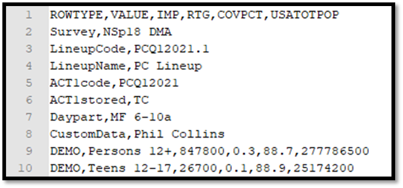
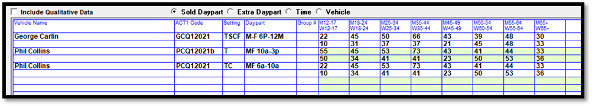
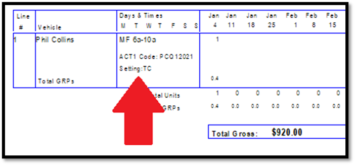
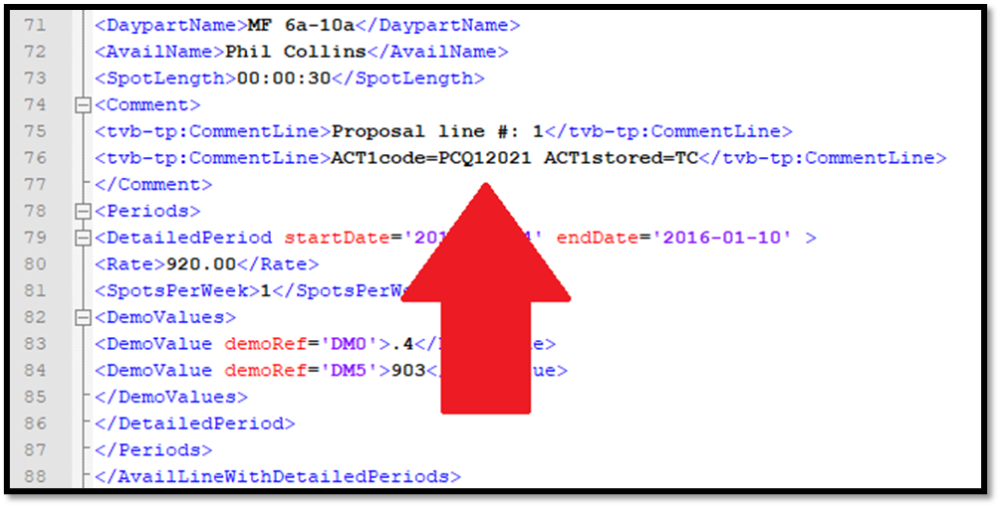
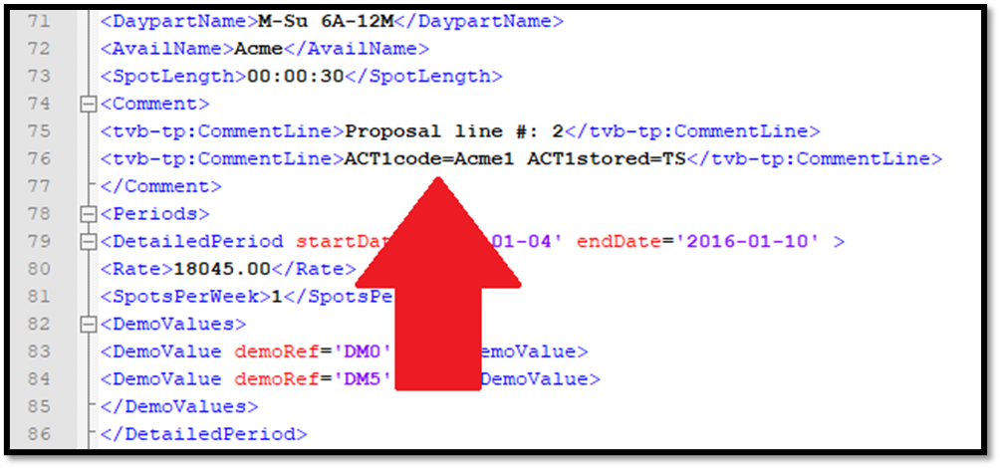
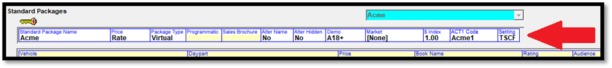
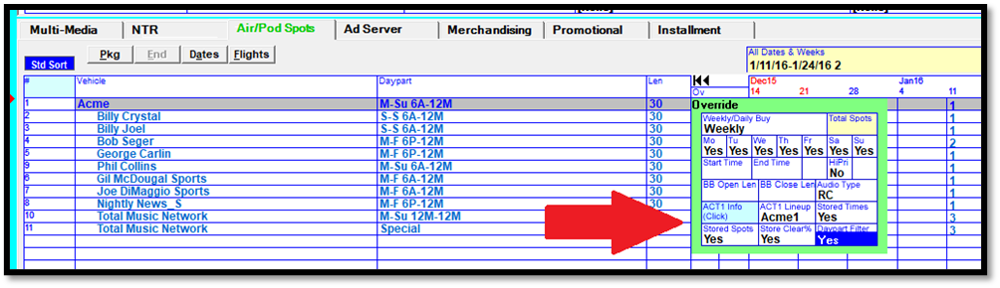

Act 1 Lineup Codes and Settings
There are differences between how Act 1 Lineup codes and settings work on version 7.1 and version 8.1 (and above).
Version 7.1
When the Act 1 Lineup Code feature is enabled on version 7.1, if manual edits are made to a research book on the Research List screen, when exiting, a warning message will appear that reads "Please update the vehicle default Act 1 Lineup codes if required". The same warning message will also appear after running the Act 1 research import. This warning message is simply a reminder to update the Act 1 Lineup code for any vehicle if needed after editing or importing the existing research data. (This warning message will not appear if the Act 1 Lineup Codes feature is not activated.)
On version 7.1, when using the Demo Summary import form (not the new Special Traffic System CSV format), the Act1 Lineup can be used as a way to allow the Act 1 research import to import data with vehicle codes longer than five characters, up to eleven characters. If the Act 1 Lineup code feature is enabled in Traffic Site Options, and the station code (limited to 5 characters) defined for a vehicle does not match the vehicle abbreviation on an Act 1 import file, and the vehicle name in Counterpoint does not match the vehicle name on an Act 1 import file (the name that appears after the abbreviation and the colon), then if there's an Act 1 Lineup code in the "Act 1 Lineup" field for a vehicle (which can be as long as 11 characters), and that matches the abbreviation on the Act 1 import file, then the data will apply to that vehicle.
Version 8.1
Special Traffic System CSV File
Starting with version 8.1, Counterpoint supports the Act 1 Special Traffic System CSV file format for the Act 1 Research import, which allows Act 1 lineup codes and settings defined in Act 1 to be imported directly into Counterpoint, along with the research data, so it can be automatically included on the Proposal XML export and Proposals/Contracts report, without manual data entry being required. For more information on running this import, see the Traffic Imports help document.
A snippet from the Act 1 Special Traffic System CSV file format is shown below.

In addition to the population and audience data that are included on the older Demo Summary format, this file format also includes the Act 1 lineup code in the “Act1code” field, and the lineup settings, in the “Act1stored field”. The Act 1 lineup code and settings are used by agencies to re-create the lineup in the Act 1 Planner application, and by automatically importing them into Counterpoint, which automatically includes them on the Proposal XML export file, it leads to greater accuracy and less manual effort when agencies recreate lineups in Act 1.
The Act 1 Special Traffic System CSV file format also allows the Counterpoint vehicle name to be entered, in the CustomData field, so that the vehicle name itself is used to match the data on the Special Traffic System CSV file to the vehicle in Counterpoint. In the Act 1 Lineup Manager application, when generating the Special Traffic System CSV export, the Custom Data field appears with a yellow background, and is a text editable field. Type the Counterpoint vehicle name directly in this field for it be included in the CustomData field on the export file.
Research Screen
The picture below shows an example of the Research List screen with research data imported from the Special Traffic System CSV file. The Act 1 lineup codes and settings have been imported automatically, and are displayed on the screen in the corresponding fields.

Reports
The following reports display the Act 1 lineup codes and settings: the Research report and the ReRate report (when the “Lineup #” checkbox is checked on).
The Proposals/Contracts report (and contract snapshot report) will show the Act 1 lineup codes and settings, as shown in the picture below, on the detail page, when the “Research” option is checked on, for contract lines that have them defined (as a result of importing them with the research book when using the Special Traffic System CSV import).

The lineup codes and settings will also be shown on the Proposal XML export, as shown in the example below.

Packages and Lineup Codes and Settings
The Act 1 research import is used to import research data for conventional, selling, and rep vehicles. Research data for package vehicles cannot be imported directly through the Act 1 research import, instead the hidden line components that make up a package are imported, and that data is used by Counterpoint to calculate the package research data. Because the Proposal XML only displays packages and conventional (non-package) lines, and not hidden lines, the following procedure should be used to get lineup codes and settings onto the Proposal XML for package lines:
1. Add the proposal to Counterpoint, using research books for the hidden lines that were imported using the Act 1 Special Traffic System CSV file that includes the lineup codes and settings.
2. Run the Proposals/Contracts report with the “include hidden lines” option checked on so that the hidden lines that make up each package are displayed, along with the lineup codes and settings for each hidden line.
3. In the Act 1 Lineup Manager, create a lineup for each package vehicle, using the lineup codes and settings of the component elements that make up each package, getting the lineup codes and settings from the Proposals/Contracts report.
4. Once the package lineups have been created, note the lineup codes and settings to use for the packages, then go back into the proposal in Counterpoint and add the lineup codes and settings for the packages into the corresponding package lines, in the Override field, as shown in the picture below. (Note: the Act 1 section on the Override popup only appears for package lines, as the hidden and conventional lines get their lineup codes and settings directly from the research book.) On the package override popup, the Act 1 code should be typed directly into the Act 1 Lineup field, and the different settings can be toggled to by clicking the toggle buttons to Yes or No for Stored Times (T = yes), Stored Spots (S = yes), Store Clear % (C = yes), and Daypart Filter (F = yes).
5. After saving the proposal with the lineup codes and settings defined for the package lines, generate the Proposal XML, and it will include the lineup codes and settings that were defined for the package lines, as shown in the snippet from an example Proposal XML below. The Proposal XML can now be sent to the agency and they can easily and accurately recreate the package lineups using the lineup codes and settings from the Proposal XML.

Alternatively, if a standard package is configured on the Rate Card Standard Package screen with the “alter name” setting of “no”, and the “alter hidden” setting of “no”, “comment/audio only”, or "rates", then a default Act 1 Lineup code and default settings can be entered for that standard package on the standard package screen, as shown in the picture below.

The Standard Package Act 1 Code and Setting field will be yellow/inaccessible if “alter name” is set to “yes” and/or “alter hidden” is set to “yes”.
When a standard package has a default Act 1 code and settings defined like this, when that standard package is added to a proposal, the default lineup code and settings defined for that package will get automatically added for the package line, so that it doesn’t have to be typed in manually, and it will appear in the Override area, as shown in the picture below.

This option is only available when the hidden lines and package name are disallowed from being edited, to help ensure that the default lineup code and settings as defined for the standard package are in sync with the corresponding composite package defined in Act 1. When new default vehicle research data is imported for the hidden lines that make up that standard package, if the Act 1 lineup code and settings for the corresponding composite package in Act 1 changes, then the default Act 1 code and settings defined for the standard package in Counterpoint should be updated accordingly, so that when standard package is added to a new proposal, it gets the correct, updated Act 1 lineup codes and settings for the package/composite.